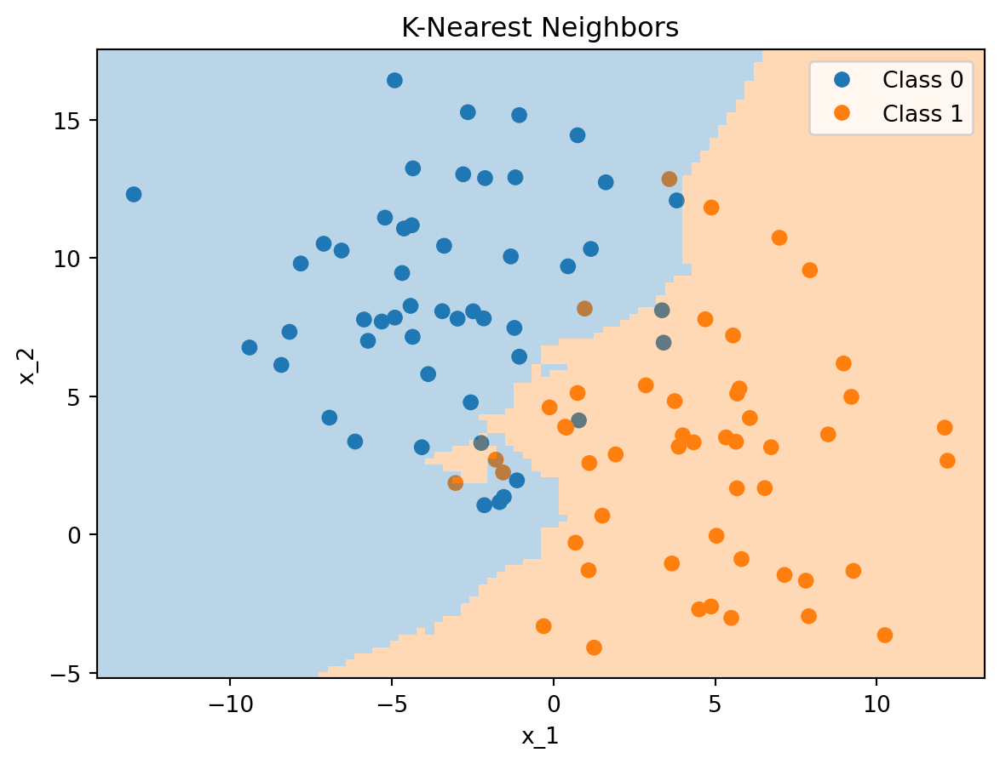
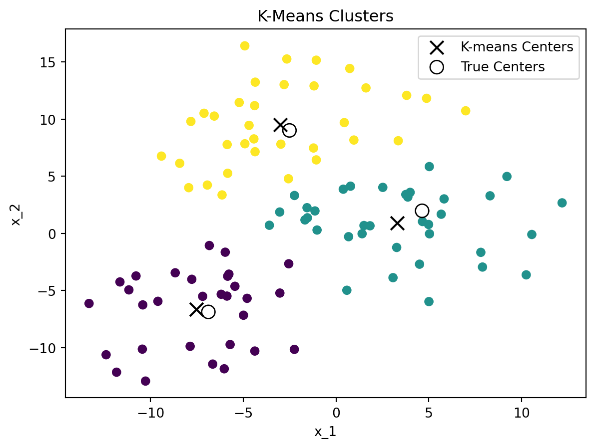
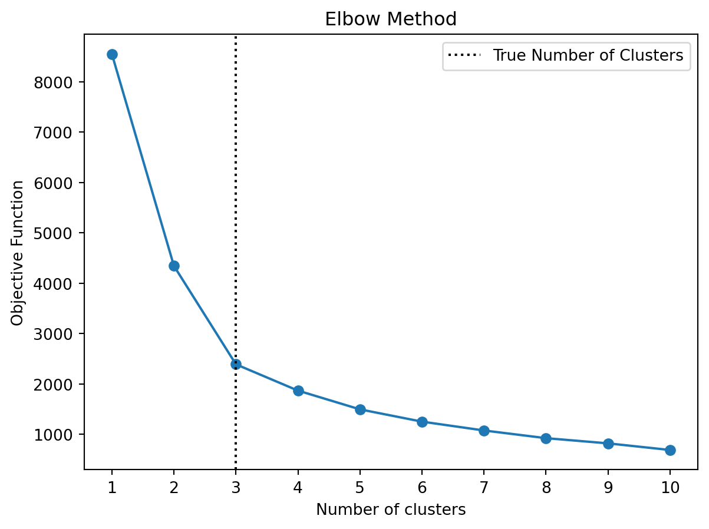
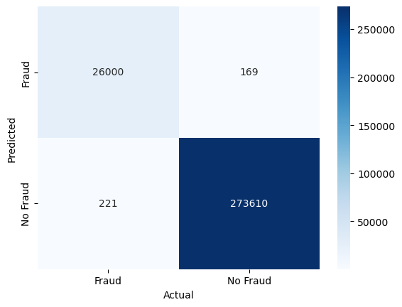
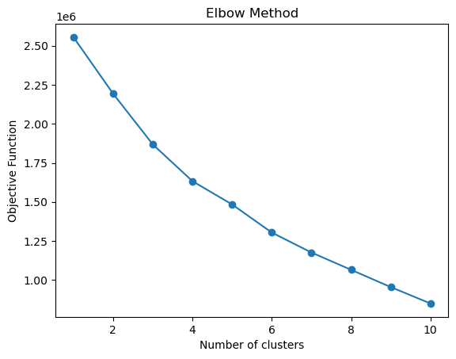

In this chapter, we will introduce some additional methods that are commonly used in machine learning. These methods include the K-Nearest Neighbors (KNN) algorithm and the K-means clustering algorithm.
5.1 K-Nearest Neighbors
The K-Nearest Neighbors (KNN) algorithm is a simple and intuitive method for classification and regression meaning that it belongs to the class of supervised learning methods. The KNN algorithm uses the \(K\) nearest neighbors of a data point to make a prediction. For example, in the case of a regression task, the prediction \(\hat{y}\) for a new data point \(x\) is
\[\hat{y} = \frac{1}{K}\sum_{x_i\in N_k(x)} y_i\]
i.e., the average of the \(K\) nearest neighbors of \(x\). In the case of a classification task, the prediction \(\hat{y}\) is the majority class of the \(K\) nearest neighbors of \(x\).

Figure 5.1: K-Nearest Neighbors Classification with \(K=5\) (Classification shown as Shaded Area)
Figure 5.1 shows an example of the K-Nearest Neighbors algorithm applied to a dataset with two classes. The decision boundary is shown as a shaded area.
5.2 K-means Clustering
K-means is a method that is used for finding clusters in a set of unlabeled data meaning that it is an unsupervised learning method. For the algorithm to work, one has to choose a fixed number of clusters \(K\) for which the algorithm will then try to find the cluster centers (i.e., the means) using an iterative procedure. The basic algorithm proceeds as follows given a set of initial guesses for the \(K\) cluster centers:
Assign each data point to the nearest cluster center
Recompute the cluster centers as the mean of the data points assigned to each cluster
The algorithm iterates over these two steps until the cluster centers do not change or the change is below a certain threshold. As an initial guess, one can use, for example, \(K\) randomly chosen observations as cluster centers.
We need some measure of disimilarity (or distance) to assign data points to the nearest cluster center. The most common choice is the Euclidean distance. The squared Euclidean distance between two points \(x\) and \(y\) in \(p\)-dimensional space is defined as
where \(x_{in}\) and \(x_{jn}\) are the \(n\)-th feature of the \(i\)-th and \(j\)-th observation in our dataset, respectively.
The objective function of the K-means algorithm is to minimize the sum of squared distances between the data points and their respective cluster centers
where second sum sums up over all elements \(i\) in cluster \(k\) and \(\mu_k\) is the cluster center of cluster \(k\).
The K-means algorithm is sensitive to the initial choice of cluster centers. To mitigate this, one can run the algorithm multiple times with different initial guesses and choose the solution with the smallest objective function value.
The scale of the data can also have an impact on the clustering results. Therefore, it is often recommended to standardize the data before applying the K-means algorithm. Furthermore, the Euclidean distance is not well suited for binary or categorical data. Therefore, one should only use the K-means algorithm for continuous data.
How to choose the number of clusters \(K\)? One can use the so-called elbow method to find a suitable number of clusters. The elbow method plots the sum of squared distances (i.e., the objective function of K-means) for different \(K\). The idea is to choose the number of clusters at the “elbow” of the curve, i.e., the point where the curve starts to flatten out. Note that the curve starts to flatten out when adding more clusters does not significantly reduce the sum of squared distances anymore. This usually happens to be the case when the number of clusters exceeds the “true” number of clusters in the data. However, this is just a heuristic and it might not always be easy to identify the “elbow” in the curve.


Figure 5.2: K-Means Clusters and Elbow Method
Figure 5.2 shows an example of the K-means clustering algorithm applied to a dataset with 3 clusters. The left-hand side shows the clusters found by the K-means algorithm, while the right-hand side shows the elbow method to find the optimal number of clusters. The elbow method suggests that the optimal number of clusters is 3, which is the true number of clusters in the dataset.
5.3 Python Implementation
Let’s have a look at how to implement KNN and K-means in Python. Again, we need to first import the required packages and load the data
import pandas as pdimport numpy as npimport matplotlib.pyplot as pltimport seaborn as snsfrom sklearn.preprocessing import StandardScaler, MinMaxScalerfrom sklearn.neighbors import KNeighborsClassifierfrom sklearn.cluster import KMeansfrom sklearn.model_selection import train_test_splitfrom sklearn.metrics import confusion_matrix, accuracy_score, roc_auc_score, recall_score, precision_score, roc_curvepd.set_option('display.max_columns', 50) # Display up to 50 columnsfrom io import BytesIOfrom urllib.request import urlopenfrom zipfile import ZipFileimport os.path# Check if the file existsifnot os.path.isfile('data/card_transdata.csv'):print('Downloading dataset...')# Define the dataset to be downloaded zipurl ='https://www.kaggle.com/api/v1/datasets/download/dhanushnarayananr/credit-card-fraud'# Download and unzip the dataset in the data folderwith urlopen(zipurl) as zipresp:with ZipFile(BytesIO(zipresp.read())) as zfile: zfile.extractall('data')print('DONE!')else:print('Dataset already downloaded!')# Load the datadf = pd.read_csv('data/card_transdata.csv')
Dataset already downloaded!
This is the dataset of credit card transactions from Kaggle.com which we have used before. Recall that the target variable \(y\) is fraud, which indicates whether the transaction is fraudulent or not. The other variables are the features \(x\) of the transactions.
Since we have already explored the dataset in the previous notebook, we can skip that part and move directly to the data preprocessing.
We will again split the data into training and test sets using the train_test_split function
X = df.drop('fraud', axis=1) # All variables except `fraud`y = df['fraud'] # Only our fraud variablesX_train, X_test, y_train, y_test = train_test_split(X, y, stratify=y, test_size =0.3, random_state =42)
Then we can do the feature scaling to ensure our non-binary variables have mean zero and variance 1
def scale_features(scaler, df, col_names, only_transform=False):# Extract the features we want to scale features = df[col_names] # Fit the scaler to the features and transform themif only_transform: features = scaler.transform(features.values)else: features = scaler.fit_transform(features.values)# Replace the original features with the scaled features df[col_names] = features# Define which features to scale with the StandardScaler and MinMaxScalerfor_standard_scaler = ['distance_from_home', 'distance_from_last_transaction', 'ratio_to_median_purchase_price',]# Apply the standard scaler (Note: we use the same mean and std for scaling the test set)standard_scaler = StandardScaler() scale_features(standard_scaler, X_train, for_standard_scaler)scale_features(standard_scaler, X_test, for_standard_scaler, only_transform=True)
5.3.2 K-Nearest Neighbors (KNN)
We can now implement the KNN algorithm using the KNeighborsClassifier class from the sklearn.neighbors module. We will use the default value of \(k=5\) for the number of neighbors.
This seems to work quite well with a ROC AUC of 0.9997. We seem to have an almost perfect classifier. We can also plot the ROC curve to visualize the performance of the classifier
Let’s also check the confusion matrix to see where we still make mistakes
conf_mat = confusion_matrix(y_test, y_pred_knn, labels=[1, 0]).transpose() # Transpose the sklearn confusion matrix to match the convention in the lecturesns.heatmap(conf_mat, annot=True, cmap='Blues', fmt='g', xticklabels=['Fraud', 'No Fraud'], yticklabels=['Fraud', 'No Fraud'])plt.xlabel("Actual")plt.ylabel("Predicted")plt.show()

5.3.3 K-Means
This is the first example of an unsupervised learning algorithm meaning that we will ignore the labels in the training set. We will use the KMeans class from the sklearn.cluster module to implement the K-means algorithm. Note that we can not use categorical variables in the K-means algorithm, so we will only use the continuous variables in this example. Furthermore, to simplify interpretability we will only use two variables
Since we only have two variables we can easily visualize the clusters using a scatter plot. We first need to unscale the data to make the plot more interpretable
Note that the centers might look a bit off because we are using log scales on the x and y-axis. In the other dimension, we don’t have such a nice separation of the clusters
But what do these two clusters represent? We can check the mean of the target variable fraud for each cluster to get an idea of what the clusters represent
There does not seem to be a clear difference between the two clusters except for the difference in the mean of the ratio_to_median_purchase_price variable. This is not necessarily very surprising since we only used three variables in the clustering algorithm. However, due to the correlation of ratio_to_median_purchase_price we have more fraudulent transactions in one cluster than the other. To be able to carry out a more meaningful clustering analysis using K-means we would need a different dataset with more quantitative variables. Nevertheless, let’s also check the elbow method to how many clusters it would suggest
interias = [KMeans(n_clusters=n, n_init=10).fit(X_train).inertia_ for n inrange(1, 11)]_, ax = plt.subplots()ax.plot(range(1, 11), interias, marker='o')ax.set(xlabel='Number of clusters', ylabel='Objective Function')plt.title('Elbow Method')plt.show()

There does not seem to be a clear elbow in the plot. Finally, we can also make predictions on the test set using the trained K-means model
kmeans.predict(X_test[continuous_variables])
array([0, 0, 0, ..., 0, 0, 1], dtype=int32)
This assigns each observation in the test set to one of the two clusters.
5.3.4 Conclusions
We have seen how to implement a KNN algorithm for classification and a K-means algorithm for clustering in Python using the sklearn package. We have also seen how to evaluate the performance of the KNN algorithm using the confusion matrix, accuracy score, precision, recall, and ROC AUC. We have also seen how to visualize the clusters created by the K-means algorithm and tried to apply the ellow method.